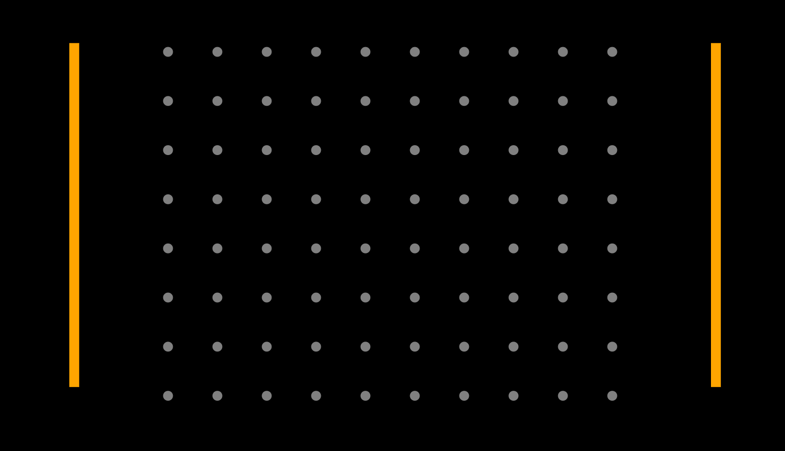
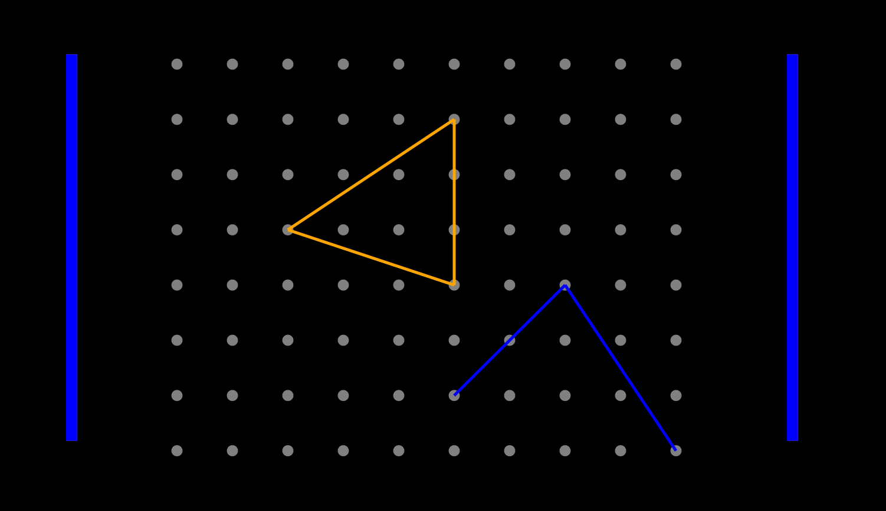
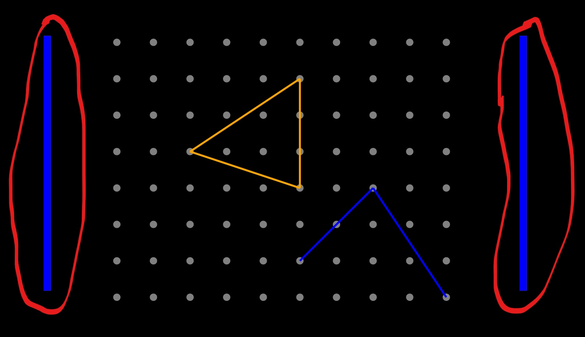
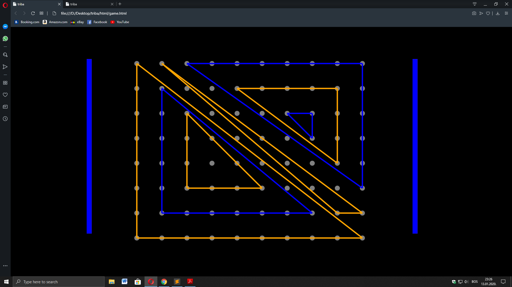

Igrica se sastoji od mreže m x n tačaka.
Dva igrača igraju naizmjenično. Svaki igrač u svom potezu bira trougao tako što izabere tri tačke iz mreže koje ne leže na istoj pravoj.
Dvije bočne linije sa strana odeređuju koji je igrač na potezu.
Trouglovi se ne smiju sjeći, te ne smiju imati zajedničke vrhove. Trouglovi se mogu nalaziti jedan unutar drugog. Igra je završena kada jedan igrač ostane bez poteza. Igrač koji je ostao bez poteza gubi.
